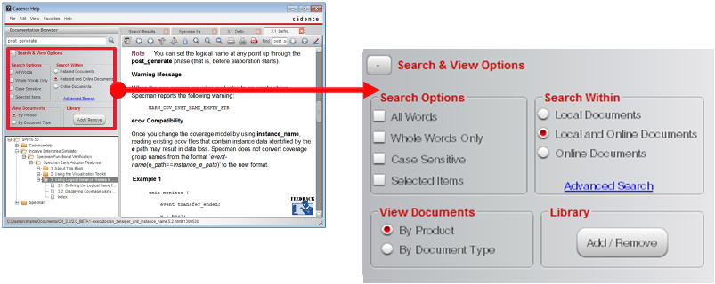

Search Options
|
All Words |
Search for all the words provided in the search
text box, including the substrings, irrespective
of the order in which the words appear. For
example, if you type |
|
Whole Words Only |
Search for the exact words included in the search
query. For example, if you search for
|
|
Case Sensitive |
Perform a case-sensitive search. |
|
Selected Items |
Search only those items that are selected in the
documentation hierarchy. To select multiple
items, hold down the |
Search Within
|
Local Documents |
Search within the product documentation available on your machine. |
|
Local and Online Documents |
Search the latest version of product documentation available online, as well as the documentation available on your machine. |
|
Online Documents |
Search the latest version of product documentation available online. |
View Documents
|
By Product |
Sort documents in the documentation browser according to the type of product. |
|
By Document Type |
Sort documents in the documentation browser according to the type of document. |
Show History
The show history feature enables you to revisit the topics you had opened recently.
Sort Search Results
You can sort the search results, depending on your requirements.